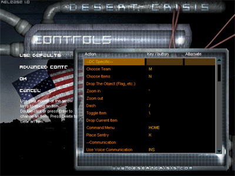

|
|
| Getting
Started |
| When
you start DC you are presented with a menu (shell).
First off to prevent the usual in game confusion set up
your controls. To do this click multiplayer,
then click controls. |
|
|
| You
will be presented with a series of control options that
looks like this. |
 |
|
| Next,
you will want to go to customize. Change your
name, spray, and voice volume here. |
|
|
If
you would like to change some of the more advanced
options, click advanced options in customize.
Page One Descriptions
Mouse Sensitivity: Determines how sensitive your
mouse is.
Multiplayer Decal Limit: Limits the amount of
multiplayer decals.
Crosshair: Put in the name of the crosshair tga
file you would like to use (located in dcrisis/sprites/).
Zoomed Crosshair: Put in the name of the zoomed
crosshair (for sniper rifles) tga file you would like to
use (located in dcrisis/sprites/).
Zoom Speed: This determines how fast you zoom in
and out.
Double Tap Speed (ms): You can fully zoom in and
out by double tapping your zoom in and out keys.
This determines how fast you have to double tap for this
to work.
Strafe Screen Tilt: When you strafe in dc, you can
experience a slight tilt in the screen. Change the
numbers in this setting to 0 if you want no tilt or a
larger number if you want more tilt (in degrees).
Tilt Speed (degrees per second): This determines
how fast you tilt.
Max Number of Flares to Draw: Change this number
(lower end computers may want to keep it low) to determine
how much flares you would like on your screen at any given
time (aka, if you have it set to 3, the maximum number of
flares you will be able to see on your screen is
3).
Page Two Descriptions
Icons Above Teammates: Teammates in DC have
icons above their heads. If you want this feature
disabled for yourself (teammates will still be able to see
an icon over your head if they have it enabled) uncheck
this box.
Precipitation: Don't want to see rain or snow, then
uncheck this.
Model Based Debris: When you (and other players)
shoot some surfaces, model based debris comes out.
If you have a lower end video card or computer, you might
want to disable this to keep a higher fps.
Eject Brass from Weapons: When somebody shoots a
weapon that uses bullets, brass comes out. These are
models, so if your computer or video card are lower end,
you might want to disable this.
Drop Clips when Reloading: When somebody reloads a
weapon that uses clips, a clip falls to the ground.
These are models, so if your computer or video card are
lower end, you might want to disable this.
Wall Puffs: If you shoot a surface, a wall puff
(sprite) will occur on that surface. These tend to
slow down lower end computers and video cards, so disable
this if needed.
Tracers: When you shoot in dc, tracers follow your
shots. These tend to slow down lower end computers
and video cards, so disable this if needed.
VGUI Hud: If your computer really sucks, disable
the vgui head and you will get a software hud replacement. |
|
|
| To
start playing DC go to multiplayer then lan
games (this is only for local area network games) or internet
games. Once in internet games to find a
server click filter and customize it to find Desert
Crisis servers (picture to the right). Once done
click ok then click update for a list of
Desert Crisis servers. Finally, choose a server and
click join. |
|
|
|
|